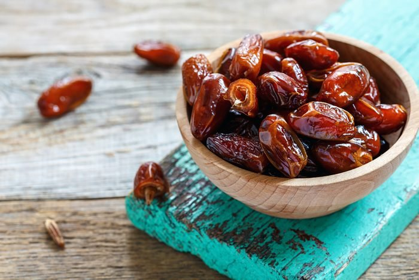
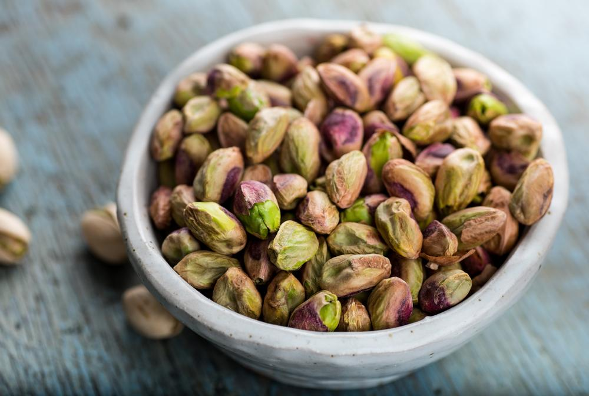
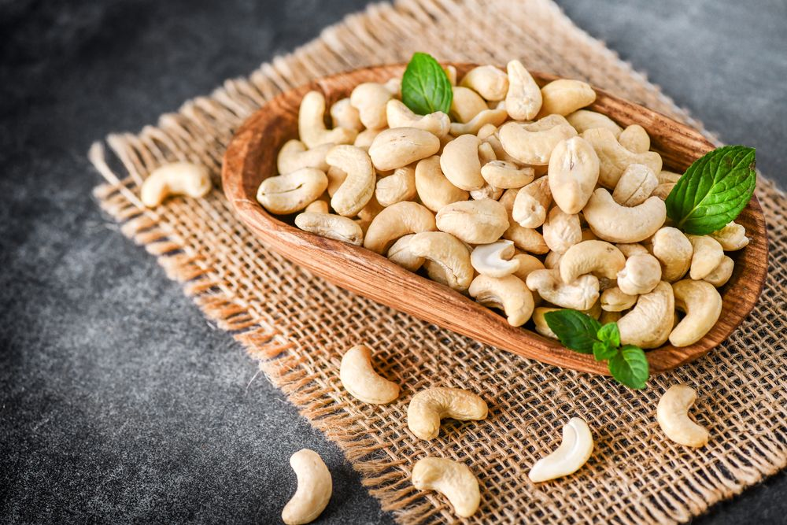

Fruits dry fruits
This is a web development project made for educational purposes. All the images used belong to the respective owners and this site holders do not hold any copyrights of any media content used here.
Now lets us have a look at the scientific names, pros and cons of fruits and dry fruits.
KIWI
.jpg)
Scientific name= Actinidia deliciosa
Pros
Kiwi contains abundant amounts of Vitamin C, which stimulates the body’s immune response.
The kiwifruit possesses properties that lower blood pressure. By helping to maintain a healthy blood pressure and providing a boost of Vitamin C, the kiwifruit can reduce the risk of stroke and heart disease.
Both in its tough skin and flesh, the kiwifruit contains high amounts of dietary fiber.
The abundance of Vitamin C in kiwis has been linked to the reduction of wheezing symptoms in some asthma patients.
Preventing eye disease and promote overall ocular health.
Cons
Kiwi may cause allergic reactions in people who are allergic to other fruits, plants, or spices such as avocado, birch pollen, fig, hazelnut, latex, poppy seed, rye, sesame seed, or wheat. Avoid eating kiwi fruit or taking kiwi products if you are allergic to any of these products.
Kiwi might slow blood clotting in some people. In theory, kiwi might increase the risk for bleeding during surgical procedures. Stop eating kiwi or using kiwi products at least 2 weeks before a scheduled surgery.
Almonds

Scientific name= Prunus dulcis
Pros
Almonds Deliver a Massive Amount of Nutrients
Almonds Are Loaded With Antioxidants
Almonds Are High in Vitamin E
Almonds Can Assist With Blood Sugar Control
Magnesium Also Benefits Blood Pressure Levels
Almonds Can Lower Cholesterol Levels
Almonds Prevent Harmful Oxidation of LDL Cholesterol
Cons
They contain oxalates, and excessive intake can cause crystallization, which can lead to many issues. People who have kidney or gall bladder problems should avoid eating almonds in large quantity.
DATES

Scientific name= Phoenix dactylifera
Pros
Dates have an excellent nutrition profile.
Getting enough fiber is important for your overall health. With almost 7 grams of fiber in a 3.5-ounce serving, including dates in your diet is a great way to increase your fiber intake.
Dates provide various antioxidants that have a number of health benefits to offer, including a reduced risk of several diseases.
Eating dates may help improve brain function.
Dates have been studied for their potential to promote and ease late-term labor in pregnant women.
Dates are a source of fructose, which is a natural type of sugar found in fruit.
Dates have been claimed to have a few other health benefits that have not yet been extensively studied.
Dates are incredibly versatile and make a delicious snack. They are often paired with other foods, such as almonds, nut butter or soft cheese.
Cons
Some people may experience an allergic reaction to date fruits. Additionally, the sulfites in dried dates can lead to allergic reactions for some people.
Dried dates have a high sugar content, especially in relation to the vitamins and minerals they provide.
Just two dried dates contain 110 calories. This makes them a great option for energy-dense trail mix, but less ideal for losing weight.
PISTA

Scientific name= Pistacia vera
Pros
Tied for being the lowest calorie nut.
The vast majority of calories in any nut come from fat and protein. Very little comes from carbohydrates.
Rich in fiber
There’s also folate, niacin, riboflavin, pantothenic acid, A, C, and E in smaller amounts. The most noteworthy however are vitamin B1 (thiamin) and vitamin B6 which clock in at 16% and 18% of your daily values, respectively, from just a one-ounce serving.
More antioxidants than almonds, peanuts, and cashews
Potent source of arginine
May reduce risk for cataracts and macular degeneration
Cons
Bad breath
Kidney damage
Diarrhea
Heart disease
Constipation
Weight gain
Nut allergy
CASHEWS

Scientific name= Anacardium occidentale
Pros
Cashews have previously received a bad rap for including saturated fat, but this may not be as problematic as the saturated label suggests. Much of the fat in cashews comes from stearic acids, which experts believe has a neutral impact on blood cholesterol.
In addition to lowering rates of LDL cholesterol, cashews may help to prevent heart disease due to their high magnesium content.
The magnesium in cashews may help to reduce the risk of stroke. This link is most notable for hemorrhagic strokes, which result from a weakened vessel that spills blood into brain tissue upon rupturing.
Cons
High Sodium Content
Cashews are high in Vitamin K, which can interfere with the anticoagulant effects of warfarin (a blood thinner). Cashews are also very high in magnesium which means that people taking medications to lower their blood pressure may also experience an increased effect from their anti-hypertensive medications, resulting in the blood pressure actually going too low.
People with nut allergies may not actually have a reaction to consuming or using cashew, however, this is not guaranteed as cashew does have many of the same qualities as tree nuts, and you are at an even higher risk of having a cashew allergy if you have a pre-existing legume allergy.